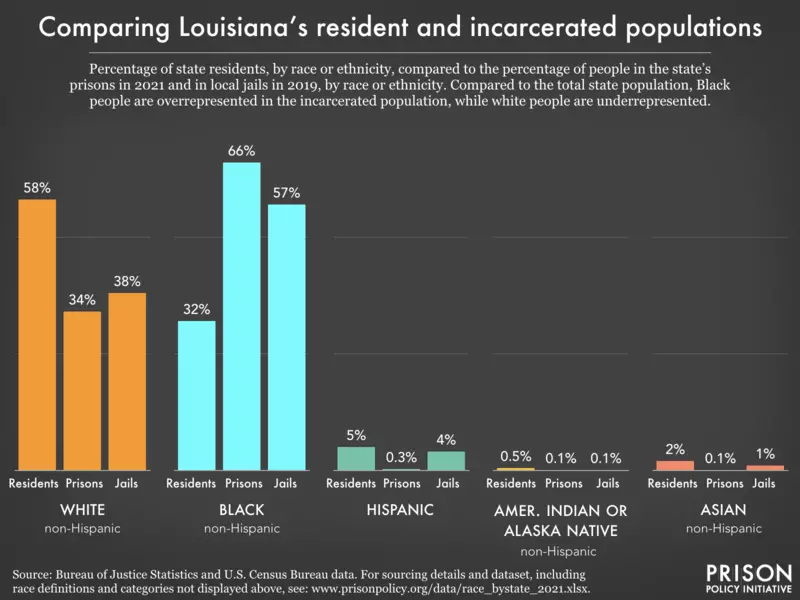

Louisiana
Louisiana has the highest percentage of its population incarcerated in the United States. This means it also has a higher percentage of its population incarcerated than any country in the world.

It also exemplifies many current issues with the prison system in the United States. One is the disproportionately large proportion of certain ethnic groups who are incarcerated.
Another is how many people are incarcerated before their trial.